15h – planche d’impression fissurée sur 11/II
Complété le 24 juin 2017
Les fissures de la planche d’impression apparaissent, pour plusieurs valeurs de cette émission, surtout aux positions marginales, où le risque d’endommagement mécanique est naturellement plus grand. En reconstituant la première et la deuxième planche d’impression de la valeur 15h (POFIS n° 7), je suis tombé sur un exemple très intéressant de planche d’impression fissurée.
Une fissure marquée du coin supérieur gauche apparaît à la 11e position de la 2e planche d’impression. J’estime qu’elle est née d’un endommagement de la planche d’impression lors du nettoyage régulier. La présence de timbres portant cet endommagement est, de mon point de vue, rare.
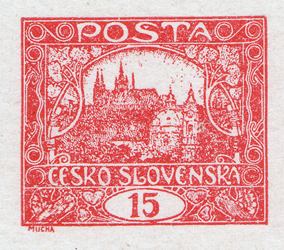
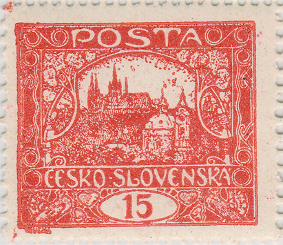
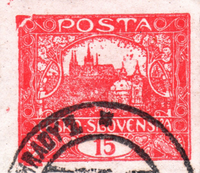
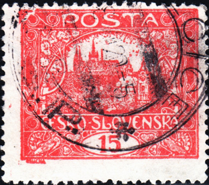
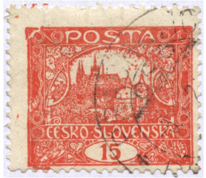
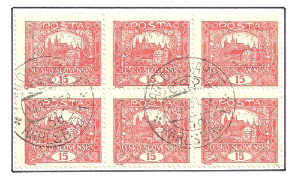
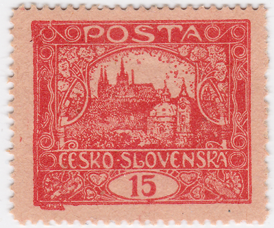
Comment la fissure a pu se former
Le nettoyage de la planche sollicite le plus les bords et les coins exposés du champ, là où une fissure capillaire apparaît le plus facilement. Aux tirages suivants, l'encre s'y infiltre — elle s'imprime comme un trait supplémentaire — et la pression de la presse l'élargit un peu plus à chaque passage. C'est pourquoi la fissure s'agrandit avec le temps, comme le montrent les phases ci-dessous.
Évolution de la fissure
La fissure s’est développée progressivement, comme le montrent les images des différentes phases :
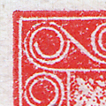
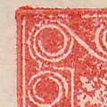
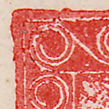
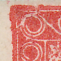
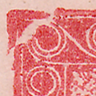
Phase 0 – planche intacte · Phase 1 – légère déformation · Phase 2 – la planche présente une fissure · Phase 3 – la fissure s’agrandit · Phase 4 – phase finale
| Dentelure | Phase 0 planche intacte | Phase 1 la planche n’est pas encore fissurée, mais présente une déformation | Phase 2 la planche présente la fissure | Phase 3 la fissure s’agrandit | Phase 4 phase finale de la fissure |
|---|---|---|---|---|---|
| non dentelé | ✓ | ✓ | ✓ | ✓ | |
| A | ✓ | ✓ | ✓ | ||
| B | ✓ | ||||
| C | ✓ | ✓ | |||
| D | ✓ | ✓ | ✓ | ||
| E | ✓ | ✓ | |||
| F | ✓ | ✓ | ✓ |
Complément : le collègue Jaroslav Michalík a publié sur le serveur infofila.cz un article intéressant sur ce sujet : infofila.cz – Hradčany : planches d’impression fissurées.